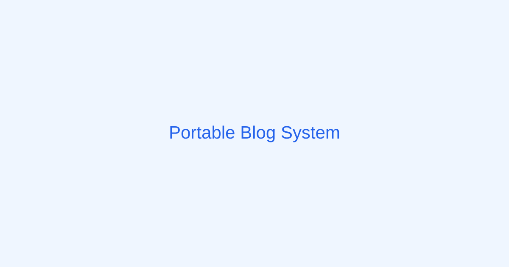

這是一篇初始化範例文章。Phase 1 會建立 Markdown 讀取與 frontmatter 解析。
tech-note
GitHub Pages 免費空間限制與部落格規劃
GitHub Pages Free Hosting Limits and Blog Planning

tech-note
GitHub Pages Free Hosting Limits and Blog Planning

這是一篇初始化範例文章。Phase 1 會建立 Markdown 讀取與 frontmatter 解析。